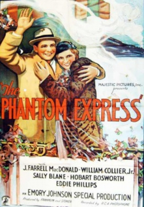
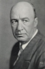

Country:United States, 70 minutes
Spoken languages:English
Genres:Drama, Mystery, Romance
Director(s):Emory Johnson
Writer(s):Laird Doyle, Emory Johnson
Video Codec:Unknown
Number: 3065


Certification:
Storyline:
Railroad foes cause terror on the tracks with the illusion of a ghost train.
Cast: 

Medium: Original DVD,
Comments: Part of: Horror Classics - 100 Movie Pack
Loaned: No
Aspect ratio: Unknown